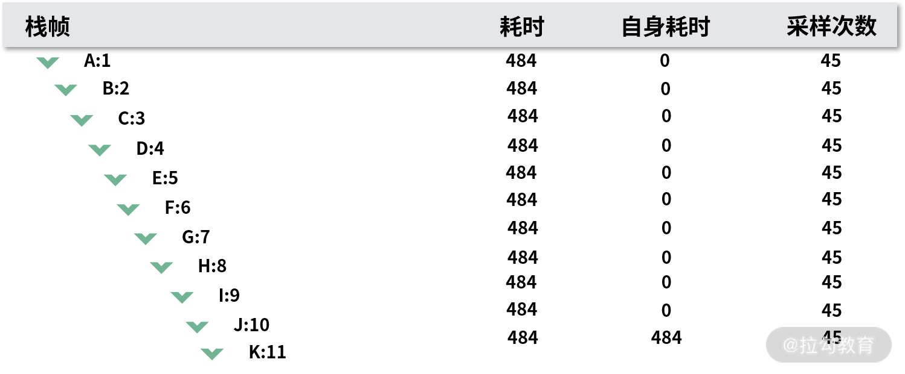

- 00 分布式链路追踪实战.md.html
- 01 数据观测：数据追踪的基石从哪里来？.md.html
- 02 系统日志：何以成为保障稳定性的关键？.md.html
- 03 日志编写：怎样才能编写“可观测”的系统日志？.md.html
- 04 统计指标：“五个九”对系统稳定的真正意义.md.html
- 05 监控指标：如何通过分析数据快速定位系统隐患？（上）.md.html
- 06 监控指标：如何通过分析数据快速定位系统隐患？（下）.md.html
- 07 指标编写：如何编写出更加了解系统的指标？.md.html
- 08 链路监控：为什么对于系统而言必不可少？.md.html
- 09 性能剖析：如何补足分布式追踪短板？.md.html
- 10 链路分析：除了观测链路，还能做什么？.md.html
- 11 黑白盒监控：系统功能与结构稳定的根基.md.html
- 12 系统告警：快速感知业务隐藏问题.md.html
- 13 告警质量：如何更好地创建告警规则和质量？.md.html
- 14 告警处理：怎样才能更好地解决问题？.md.html
- 15 日志收集：ELK 如何更高效地收集日志？.md.html
- 16 指标体系：Prometheus 如何更完美地显示指标体系？.md.html
- 17 链路追踪：Zipkin 如何进行分布式追踪？.md.html
- 18 观测分析：SkyWalking 如何把观测和分析结合起来？.md.html
- 19 云端观测：ARMS 如何进行云观测？.md.html
- 20 运维集成：内部的 OSS 系统如何与观测相结合？.md.html
- 21 结束语 未来的监控是什么样子？.md.html
- 捐赠
09 性能剖析：如何补足分布式追踪短板？
在上一节，我带你了解了链路追踪的基本概念，它是可观测性中必不可少的一环。这一课时，我会带你了解链路追踪中的短板是什么，又该如何去处理。
链路追踪的短板
在上一课时我提到，链路追踪中最小的单位是 Span，每一个 Span 代表一个操作，但这样存在一个问题，粒度还是太粗了。如何解决粒度太粗的问题呢？在链路追踪的实现中，我们一般会有 2 种方式。
- 代码埋点：在代码中预埋点，通过侵入式的方式记录链路数据。
- 字节码增强：在字节码生成之后，再对其进行修改，从而给它功能。比如像 Java 这类语言，就可以通过字节码增强，而不是人工侵入式的方式记录链路数据。
这两点的区别在于，是否是侵入式的。埋点的方式虽然灵活，但是依赖性较高；字节码增强的形式不需要代码层介入，但仅能支持一部分应用框架。这两种方式能够实现链路追踪，并且可以大面积的使用 ，因为框架都是通用的。
但通用的链路监控方案的实现方式都逃不过面向切面编程，因为它们只能做到框架级别，而这又会导致我们可能会遇到程序执行缓慢或者不稳定的情况，却无法查询到原因。我之前在链路监控时，发现一个接口内部有很长的一段时间内没有 Span 信息。虽然我知道了这个情况，但还是无能为力。
这时候我们一般只能通过在业务中手动增加埋点的方式来进行更细粒度的 Span 开发，这种方法也有几个缺点：
- 增加埋点成本高，很难全面覆盖。这样的方式只适用于具体的业务场景，如果其他的业务场景也存在类似的问题，就需要在其他的业务场景中再次埋点。如果一次没有把需要埋点的位置加全，还可能会涉及多次的上线，降低了系统的稳定性。 大量的埋点同时还会占用 CPU 和内存的资源。虽然每个埋点的性能损耗都不高，但是随着项目不停地迭代，埋点的数量会越来越多，性能损耗也会越来越多，长期下来就会对系统性能造成持续的影响。而且埋点后还需要开发人员定期移除掉不需要的埋点信息，极其浪费人员和时间成本。
- 动态增加埋点技术不可靠。既然人工难处理，那让系统自动处理呢？这便有了动态增加埋点技术。它是在某个特定的包下，对每个方法的执行都增加埋点，无须手动修改代码。但是这一技术的问题也很明显：因为会给所有的地方都增加埋点，性能的损耗可能比人工的方式更为严重，甚至因为埋点过多导致内存增长，最终造成系统崩溃，影响线上程序运行。
- 即使我们通过一个十分合理的方式解决了上面的两个问题，我们也只能在业务级别做埋点，没有办法细入 JDK 中的某个场景。因为如果要对 JDK 中的某个方法做埋点的话，可能会造成巨大的延迟风险。
对于一些 JDK 中的底层工具类，如果我们处理不当，还会出现很多不可预料的错误，那时候就不光是影响程序效率这么简单的问题。
性能剖析介绍
那么对于以上的 3 个问题，要怎样解决呢？其实你可以换个角度去思考，不要被链路追踪中 Span 的思想框架给限制住。我在这里给出 2 点建议：
- 在编程语言中，基本所有的代码都是运行在线程中的，并且大多数的情况下都是单线程，比如 HTTP 或者 RPC 等框架接收到请求之后都会交给单独的线程去处理。
- 大多数的编程模型是基于线程的这一个概念去实现很多功能的，无论是现成的框架，还是底层的 JDK，比如 Dubbo 中的 RPCContext、Java 中线程安全的随机数生成器 ThreadLocalRandom。
既然都是基于线程的，而线程中基本会伴随着方法栈，即每进入一个方法都会通过压入一个方法栈帧的情况来保存。那我们是不是可以定期查看方法栈的情况来确认问题呢？答案是肯定的。比如我们经常使用到的 jstack，其实就是实时地对所有线程的堆栈进行快照操作，来查看当前线程的执行情况。
利用我上面提到的 2 点，再结合链路中的上下文信息，我们可以通过周期性地对执行中的线程进行快照操作，并聚合所有的快照，来获得应用线程在生命周期中的执行情况，从而估算代码的执行速度，查看出具体的原因。
这样的处理方式，我们就叫作性能剖析（Profile），原理可以参照下图：

在这张图中，第一行代表线程进行快照的周期情况，每一个周期都可以认为是一段时间，比如 10ms、100ms。周期的时间长短，决定了对程序性能影响的大小。因为在进行线程快照时程序会暂停，当快照完成后才会继续进行操作。
第二行则代表我们需要进行观测的方法的执行时间，线程快照只能做到周期性的快照获取。虽然可能并不能完全匹配，但通过这种方式，相对来说已经很精准了。
性能剖析与埋点相比，有以下几个优势：
- 整个过程中不涉及任何的埋点，所以性能损耗是相对稳定可控的，不用再担心因为埋点过多导致的业务系统的压力和性能风险。同时因为不涉及埋点，所以不再需要重复的增加或者删除埋点，大大节省了人力开发和上线的时间。
- 无须再担心是底层 JDK 还是框架，或是业务代码，在运行时它们都是代码，不需要对它们进行区分。
- 结合当前链路中的上下文信息，只需要对指定的链路执行时间之内进行性能剖析，而不用对每个线程定时进行线程快照操作，因此减少了程序性能的损耗。
- 通过精准到代码行级别的方式，可以定位执行缓慢的原因，减少研发定位问题的时间。
- 只在需要的时候才使用，平时不会使用到这样的功能，因此性能损耗也是稳定的。
性能剖析展现方式
假如我们已经利用性能剖析工具获取到了链路中的线程快照列表了，那么我们该怎么去展现它们呢？
这个时候我们一般可以通过 2 种方式查看线程聚合的结果信息，它们分别是火焰图和树形图。
火焰图
火焰图，顾名思义，是和火焰一样的图片。火焰图是在 Linux 环境中比较常见的一种性能剖析展现方式。火焰图有很多种展现形式，这里我就以我们会用到的 CPU 火焰图为例：

CPU 火焰图
在 CPU 火焰图中，每一个方格代表一个方法栈帧，方格的长度则代表它的执行时间，所以方格越长就说明该栈帧执行的时间越长。火焰图中在某一个方格中增高一层，就说明是这个方法栈帧中，又调用了某个方法的栈帧。最顶层的函数，是叶子函数。叶子函数的方格越宽，说明这个方法在这里的执行耗时越长。
如果觉得上面的火焰图太复杂的话，我们可以看一张简化的图，如下：

图中，a 方法是执行的方法，可以看出来，其中 g 方法是执行时间相对较长的。
无论是火焰图，还是这张简化的图，它们都通过图形的方式，让我们能够快速定位到执行缓慢的原因。但是这种的方式也存在一些问题：
- 不方便查看函数名称等信息。虽然我们可以做一些交互上的处理，比如浮动时展示，但如果我们在进行栈帧跟踪，查询还是不方便。
- 很难发现非叶子节点的问题。我们在简化图中可以发现，我们在 d 方法中除了 e 和 f 方法的调用以外，其实 d 方法还有一段的时间是自己消耗的，并且没有被处理掉，这一问题在火焰图中会更加明显。
树形图

为了解决这 2 个问题，就有了另外一种展现方式，那就是树形图。树形图就是将方法的调用堆栈通过树形图的形式展现出来。这对于开发人员来说相对直观，因为你可以通过树形图的形式快速查看整体的调用情况，并且针对火焰图中的问题，树形图也有很好的解决方法：
- 使用这样的形式，栈帧很容易识别，并且之间的调用关系也很容易理解。
- 对于非叶子节点的耗时，可以直接查看到自身耗时的数据。
但树形图也有一些自己的问题：
- 内容显示相对较长，在方法栈相对复杂的情况下，这一问题会更为突出。
- 栈帧深度较多时，容易显示不全信息。
所以在树形图中一般会配合前端的展示，比如只显示 topN 中耗时较高的内容，或者支持搜索功能。
火焰图和树形图没有绝对的好坏之分，只是相对应的侧重点不同：
- 火焰图更擅长快速展现出问题所在，能够最快速地找到影响最大的问题的原因。
- 树形图则更倾向于具体展示出栈的执行流程，通过执行流程和耗时统计指标来定位问题的原因。
结语
相信通过这篇文章的讲解，你应该对链路追踪的短板，以及如何通过性能剖析去解决这些短板有了一个整体的思路。那么，你认为怎么样将这两者结合才是最方便的呢？你在工作中又遇到过什么和链路追踪相关的问题呢？欢迎你在留言区分享你的思考。
© 2019 - 2023 Liangliang Lee. Powered by gin and hexo-theme-book.